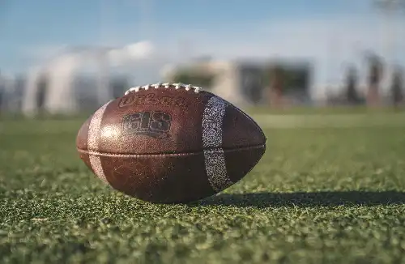

Basketball
Basketball is a fast-paced team sport played on a rectangular court where two teams of five players each try to score points by shooting a ball through the opponent’s hoop. It’s a game that requires skill, coordination, and teamwork, combining elements like dribbling, passing, shooting, and defense. Invented in 1891 by Dr. James Naismith, basketball has grown into a global sport with professional leagues, college tournaments, and millions of fans around the world. Whether played indoors or on outdoor courts, basketball brings people together and encourages physical activity and competitive spirit.
American Football
American football is a physically intense sport played between two teams of eleven players on a 100-yard field. The goal is to score points by advancing the ball into the opponent’s end zone through running plays or passing. Known for its strategic plays, hard-hitting tackles, and thrilling touchdowns, the game is especially popular in the United States, with the NFL and college football drawing huge audiences. It’s a game of strength, skill, and teamwork.
Football
Football, known as soccer in the United States, is the world’s most popular sport. Played by two teams of eleven players, the objective is to score goals by kicking a ball into the opposing team’s net. With its simple rules and global reach, football brings people of all ages and backgrounds together. It’s a game that values speed, footwork, strategy, and teamwork—and is celebrated through iconic events like the FIFA World Cup.
Baseball
Baseball is a classic American pastime played between two teams of nine players. The game involves hitting a ball with a bat and running bases to score runs. It’s known for its slower pace, deep strategy, and moments of explosive action. With a rich history and traditions, baseball is woven into American culture through Major League Baseball and local games, often associated with summer days, ballparks, and a sense of community.
Hockey
Hockey is a fast and physical sport played on ice, where two teams of six players each use sticks to control a puck and try to score goals. Speed, agility, and teamwork are essential, as players glide across the rink and engage in quick transitions and hard checks. Ice hockey is especially popular in countries like Canada, the United States, Russia, and Sweden, with the NHL as its top professional league. The game’s intensity and pace make it exciting to watch and play.